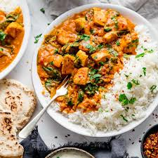

Chicken Curry Recipe

Description
Chicken curry from the Indian subcontinent typically features chicken stewed in a tomato-based sauce seasoned with aromatic spices. This recipe, like many others, calls for curry powder (a spice blend made with coriander, turmeric, cumin, and chili powder).
Ingredients
- olive oil
- onion, chopped
- garlic cloves, minced
- curry powder
- ground cinnamon
- paprika
- bay leaf
- grated fresh ginger root
- skinless, boneless chicken breast halves - cut into bite-size pieces
- tomato paste
- yogurt
- coconut milk
- lemon, juiced
- cayenne pepper
Steps
- Heat olive oil in a skillet over medium heat. Sauté onion until lightly browned.
- Stir in garlic, curry powder, cinnamon, paprika, bay leaf, ginger, sugar, and salt. Continue stirring for 2 minutes.
- Add chicken pieces, tomato paste, yogurt, and coconut milk. Bring to a boil, reduce heat, and simmer for 20 to 25 minutes.
- Remove bay leaf, and stir in lemon juice and cayenne pepper. Simmer 5 more minutes.
- Serve hot with chapti or rice and enjoy!